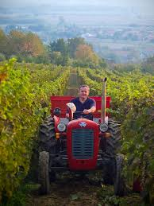
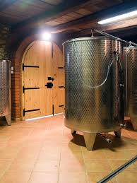

Obiteljska tradicija vinogradarstva u srcu Slavonije. Kvalitetna vina sa zaštićenom oznakom izvornosti.
OPG Perić obiteljsko je gospodarstvo smješteno u Velikoj, u srcu slavonskog vinogorja. S posvećenošću kvaliteti i poštovanjem prema zemlji, uzgajamo i proizvodimo vina koja odražavaju karakter ovog kraja.
Naši vinogradi nalaze se na obroncima koji uživaju idealnu ekspoziciju i mikroklimu za uzgoj autohtonih slavonskih sorti. Svaka boca nosi priču o berbi, o godini i o ljudima koji stoje iza nje.
Proizvodimo kvalitetna vina sa zaštićenom oznakom izvornosti "Slavonija", s naglaskom na sorte koje ovdje daju najbolje od sebe.
Naša Graševina berbe 2024. — svježa, aromatična, s finim mineralnim karakterom tipičnim za slavonske vinograde. Idealna uz riječnu ribu, bijela mesa i slavonske sir-salate.
U našem podrumu vino sazrijeva u kontroliranim uvjetima, čuvajući svježinu i sortni karakter od berbe do boce.
